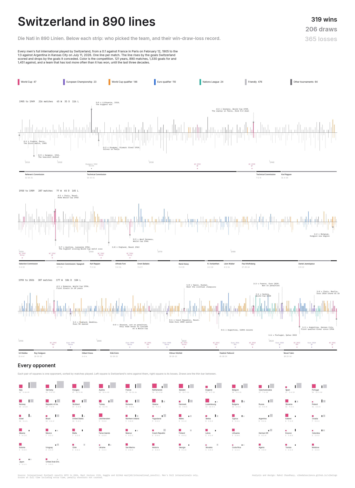

Every men's full international played by Switzerland, from a 0:1 in Paris on February 12, 1905 to the 1:3 against Argentina in the 2026 World Cup quarter-final. One thin line per match: it rises by the goals Switzerland scored and drops by the goals it conceded, and the color is the competition. Click the poster for the full size version.
{kind=link}

890 matches, 319 wins, 206 draws, 365 losses, 1,330 goals for, 1,451 against. Source: Mart Jürisoo, International football results 1872 to 2026 (CC0).
What the lines show
Twenty-one matches are marked along the strips, from the 0:1 in Paris in 1905 and the 0:9 in Budapest in 1911 through the 1924 Olympic final, the 1938 replay against Germany, the 5:7 in Lausanne, the 1:0 over Spain in Durban, the 3:3 with France in Bucharest, and the 2026 quarter-final in Kansas City. The three strips split the record into 1905 to 1949, 1950 to 1989, and 1990 to 2026. The first two are dominated by grey friendlies and by lines that drop further than they rise: Switzerland lost 116 of its first 216 matches and 145 of the next 287. The third strip flips. Since 1990 the team has won 177 and lost 104, the friendlies thin out, and the colored lines of World Cup and Euro qualifiers take over the page. The 2026 World Cup run, six matches ending in Kansas City, is the last cluster of pink at the right edge.
The glyph grid at the bottom borrows the square-pair form Hahn+Zimmermann used for their Women in Politics poster, which took silver at the Swiss Viz Awards 2025. Each opponent gets two squares: the pink one is Swiss wins against them, the grey one is Swiss losses, and the thin bar between is draws. Italy, Germany and Hungary have been the most frequent opponents, and against all three the grey square is bigger.
Who picked the team
Under each strip is a band of the people who selected the side, with their win-draw-loss record computed from the same match list. For the first half century that was mostly a committee. The Referee's Commission ran the team from 1910 to 1924 and the Technical Commission from 1924 to 1937, and Karl Rappan, the Austrian who invented the Swiss bolt defence, moves in and out four times between 1937 and 1963. The full-time single coach only becomes the norm from Alfredo Foni in 1964. Every coach since Uli Stielike in 1989 has averaged more than 1.5 points per match; nobody before him except Rappan managed 1.4.
| Coach | From | Matches | W-D-L | Points per match |
|---|---|---|---|---|
| Technical Commission | 1924 | 102 | 26-15-61 | 0.91 |
| Karl Rappan | 1942 | 38 | 16-4-18 | 1.37 |
| Paul Wolfisberg | 1981 | 51 | 17-20-14 | 1.39 |
| Uli Stielike | 1989 | 25 | 13-5-7 | 1.76 |
| Roy Hodgson | 1992 | 40 | 20-10-10 | 1.75 |
| Köbi Kuhn | 2001 | 72 | 31-18-23 | 1.54 |
| Ottmar Hitzfeld | 2008 | 61 | 30-18-13 | 1.77 |
| Vladimir Petković | 2014 | 78 | 41-18-19 | 1.81 |
| Murat Yakin | 2021 | 65 | 28-23-14 | 1.65 |
Above each coach band, a small triangle marks every tournament the team reached and the round it went out: 13 World Cups, 6 Euros and the 1924 Olympic silver. Four of the five deepest runs (quarter-finals in 1934, 1938 and 1954, then not again until Euro 2020, Euro 2024 and the 2026 World Cup) sit at the two ends of the record.
Tenure dates come from RSSSF and worldfootball.net; matches are assigned to a coach by date, so records differ by a game or two from official counts where a tenure started or ended mid-window.
How it was made
The dataset is the results.csv file from martj42/international_results on GitHub, mirrored on Kaggle, filtered to matches with Switzerland as home or away team. Scores are at full time including extra time, so the two shootout wins in 2021 and 2026 appear as draws. Tournaments were grouped into six buckets plus an "other" bucket for the Central European International Cup, the Olympics and one-off invitationals. The poster is one matplotlib figure: three axes for the strips, with one line drawn per match, and one equal-aspect axis for the glyph grid so the squares stay square.
Data: martj42/international_results, public domain.